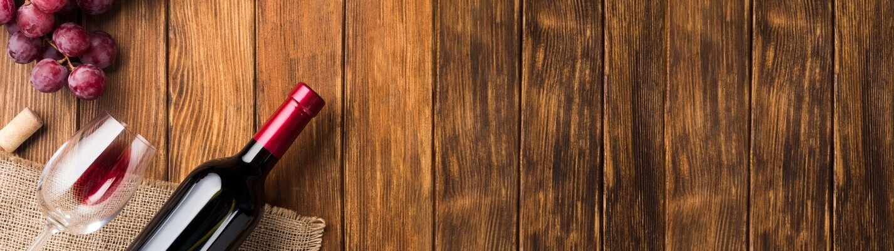

Bodega Tierra de Vinos
Inicio
Quienes somos
Historia
Equipo
Noticias
Eventos
Tienda
Localización
Contacto

CATAS DE VINO
SELECCIONAR FECHA EVENTO:
4 de Mayo
LA LEYENDA DEL VINO
Una ocasión preciosa para conocer y disfrutar el mundo del vino desde una perspectiva totalmente distinta que no te dejará indiferente.
Descubre mil secretos que durante la historia han originado las características de nuestros vinos.
Precio: 25€ (Sesion de cata de 5 vinos + 5 pinchos)
11 de Mayo
iBERICOS Y VINOS
Hermanos casi de sangre. Amigos inseparables.
Una relación que sin duda da envidia. Perfectos anfitriones de miles de veladas.
Inmejorables embajadores de nuestro país. Unidos desde siempre y para siempre. Los tintos y los ibéricos son, lo que son.
Precio: 25€ (Sesion de cata de 5 vinos + 5 pinchos)
18 de Mayo
VINOS MEDITERRANEOS
Comparte una sesión de cata protagonizada por los vinos cosechados al amparo de uno de los mares que bañan nuestra península, el Mediterráneo.
Descubre su color, su aroma, su sabor. Descubre los matices que los convierten en únicos y acompáñalos de manjares.
Precio: 25€ (Sesion de cata de 5 vinos + 5 pinchos)
25 de Mayo
CICLO DE LA VID
El ciclo de la vida de nuestros viñedos, se abre paso esta semana en nuestra sala de catas.
Una sesión llena de historias, de secretos y de pasión.
Un temático que nos deja conocer como la tierra, la naturaleza, y la paciencia.
Precio: 25€ (Sesion de cata de 5 vinos + 5 pinchos)